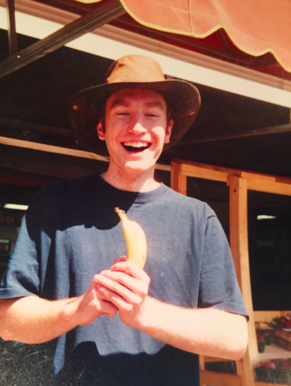
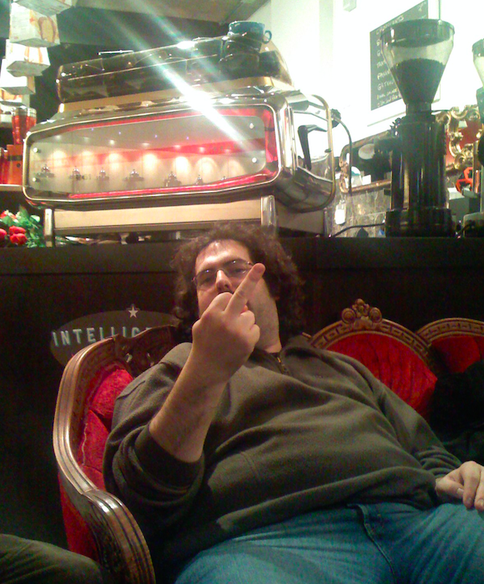
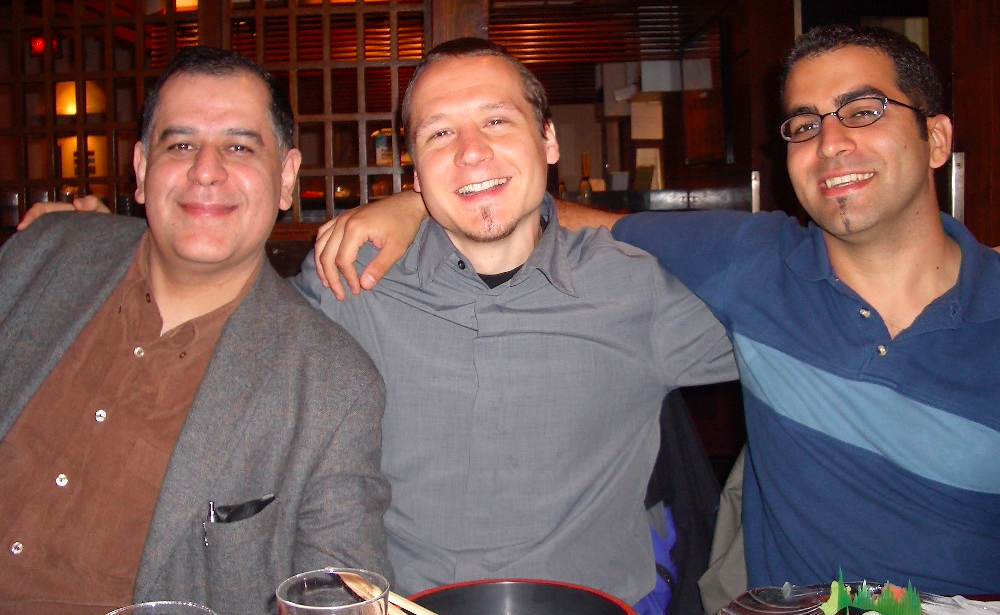
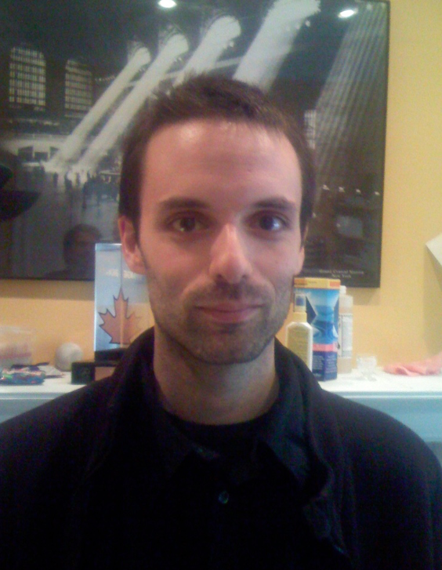
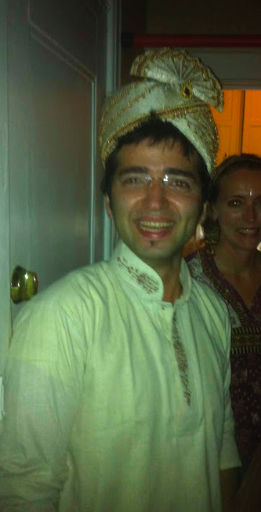
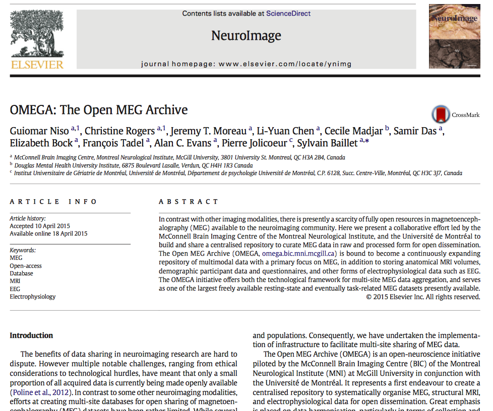
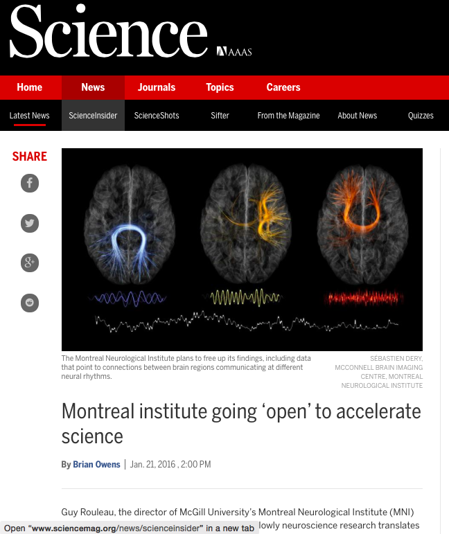

LORIS
To boldly go where no ACE researcher has apparently gone before...
ACE Lab Meeting - February 26th, 2016
Samir Das & Zia Mohades
Today's talk
1 - What is LORIS and how it was developed?
2 - What data sharing projects are coordinated by MCIN?
3 - How LORIS can facilitate your own research needs?
What is LORIS?
|
“LORIS is a modular and extensible web-based data management system that integrates all aspects of a multi-center study: from heterogeneous data acquisition (imaging, clinical, behavior, genetics) to storage, processing and ultimately dissemination.” |

|
History of LORIS - The Creator
The nice guy
Core Developer
Lab Manager
Prison Break
My jailbreak accomplice
The Warden
Everybody Loves Zia
LORIS Demo
LORIS globally

|

|
|


|

|
|

|

|
|  |
|
|
|
Open Science
|
“We’re doing a really shitty job." -- Guy Rouleau |
 |
Other possible datasets
PreventAD
ADNI?
ABIDE?
Gen-R?
PERFORM?
Others...?
How can LORIS be useful to you?
Testimonials
"You don't understand... LORIS saved our lives ... We could share our data anywhere. LORIS makes it really hard to share incorrect data. The quality control data is right there. You can share the QC... it's so well QCed" -- Angelina Paolozza (NeuroDevenet, 2015)
Key Features for the lab
Organize your data
Enable Quality Control
Easy data sharing
Provenance capture
Facilitate image visualization
Summary statistics
Facilitate statistical analysis
Linking your data across modalities
Online Data Querying
Additional Features
Centralized data repository
Download data from one place
Centralized Document Repoistory
Backup your data
Consent is factored in
Anonimyzed automatically online
Raw data can be accessed (e.g. DICOM archiver)
Tablet Friendly - Survey module
Data Sharing Initiatives
Public Data Repositories
Collaborative Data releases
CBRAIN hooks
Ontologicial standardization (e.g. BIDS)
External Provenance (e.g. NIDM)
Interoperability with other competitors
Open Science at the MNI
LORIS developement: Please give us your feedback.
|
|

Acknowledgements
Alan Evans, Alex Zijdenbos, Reza Adalat, Penelope Kostopoulos, Louis Collins, Vladimir Fonov, Marc Rousseau, Tarek Sherif, Pierre Rioux, Nic Kassis, Leigh MacIntyre, Claude Lepage, Ilana Leppert, Carolina Makowski, Natasha Beck, Tristan Glatard, Bert Vincent, Lindsay Lewis, Najma Mahani, Elodie Portales-Casamar, Alden Woodward, Sylvain Milot, Jean Francois Malouin & Sylvain Baillet
LORIS Developers: Dario Vins, Jonathan Harlap, Matt Charlet, Andrew Corderey, Sebastian Muehlboeck, David Brownlee, Zia Mohaddes, David MacFarlane, Cecile Madjar, Mia Petkova, Christine Rogers, Rathi Gnanasekaran, Justin Kat, Nicolas Brossard, Tara Campbell, Jordan Stirling, Daniel Kroetz, Ted Strauss, Young-vin Nah, Shipra Agarwal, Pierre-Emmaunel, Martin Weiss, Ayan Sengupta, Olga Tsibulevskaya, Nicolas St. George, Justin Leong, Mathieu Desrosiers, Gregory Luneau, Mouna Safi-Harab, Tom Beaudry, Santiago Paiva, Shen Wang and John Saigle